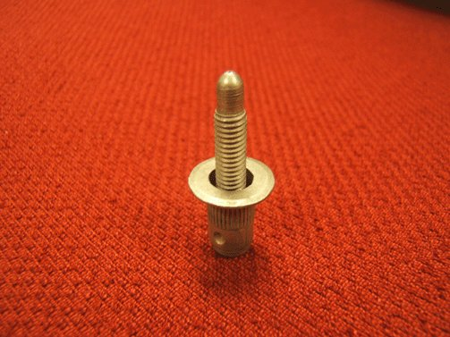
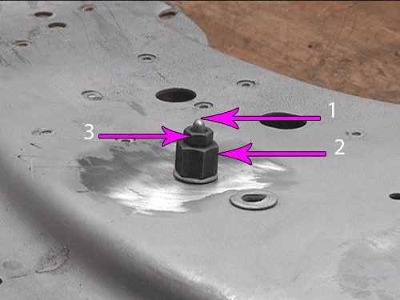
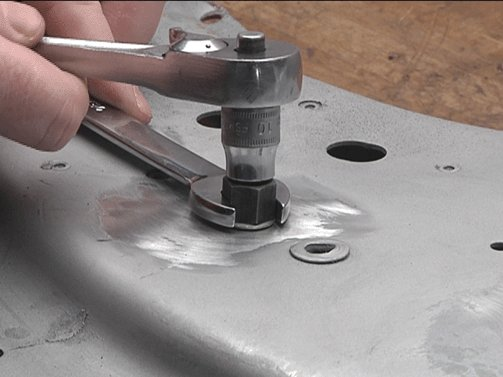
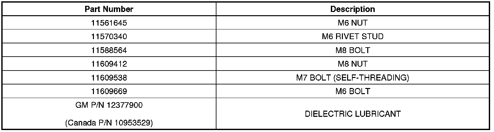
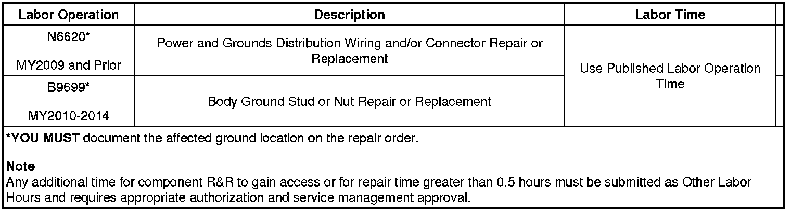

Electrical - Ground Repair Information
INFORMATIONBulletin No.: 10-08-45-001D
Date February 14, 2013
Subject: Information for Electrical Ground Repair Use New Replacement Fasteners with Conductive Finish
Models:
2014 and Prior GM Passenger Cars and Trucks
Supercede:
This bulletin is being revised to add the 2013 and 2014 model years and remove the Saab Warranty Information section. Please discard Corporate Bulletin Number 10-08-45-001C (Section 08 - Body and Accessories).
Electrical Ground Repair Overview
Proper electrical system function relies on secure, stable and corrosion-free electrical ground connections. Loose, stripped, or corroded connections increase the possibility of improper system function and loss of module communication. These conditions may also lead to unnecessary repairs and component replacement.
In general, electrical ground connections are accomplished using one, or a combination of the following attachment methods:
- Welded M6 stud and nut
- Welded M6 nut and bolt
- Welded M8 nut and bolt
Determine which attachment method is used and perform the appropriate or alternative repair as described in this bulletin.
M6 Weld Stud Replacement
Caution
Use only the GM-approved replacement fasteners with conductive finish for electrical ground repair.
1. Select a location adjacent the damaged or missing M6 ground stud having 20 mm (0.79 in) clearance behind the panel surface and 20 mm (0.79 in) clearance surrounding the M6 conductive rivet stud flange.
2. Using GM approved residue-free solvent or equivalent, remove any grease from the repair site and allow to dry.
Note
Ensure 20 mm (0.79 in) clearance is maintained behind the panel to be drilled.
3. Drill a 10 mm (0.40 in) diameter hole through the panel.

4. Remove paint and primer from the area surrounding the 10 mm (0.40 in) hole until bare metal is visible.

Important
The M6 conductive rivet stud as shown, can accommodate a panel thickness range of 0.7-4.2 mm (0.03-0.17 in). If there are layers of sheet metal, they should be touching without any air gaps to ensure a good ground.
5. Select a M6 conductive rivet stud. Refer to the Parts Information section of this bulletin.

Note
Use the GE-50317 rivet stud tool kit.
6. Place the M6 conductive rivet stud (1) in the 10 mm (0.40 in) hole. Assemble the rivet stud tool (2) with the groove and flare side facing the rivet stud, then the washer and the M6 nut (3).

7. Using a wrench on the rivet stud tool, and a socket on the M6 nut, secure the M6 conductive rivet stud.
8. Ensure the rivet stud is securely fastened, WITHOUT ANY detectable movement.
9. Completely wrap the threads of the rivet stud with painters tape or equivalent.
Note
The rivet stud and surrounding panel area MUST BE properly refinished PRIOR to the installation of the ground wire terminal and conductive nut to maintain a secure, stable and corrosion-free electrical ground.
10. Refinish the repair area using an anti-corrosion primer. Refer to Anti-Corrosion Treatment and Repair in SI.
11. Allow the refinished repair area to cure sufficiently before removing the protective material applied to the rivet stud threads.
12. Remove the painters tape or equivalent from the rivet stud threads.
13. Using GM approved residue-free solvent or equivalent, thoroughly clean the rivet stud threads to remove any adhesive and allow to dry.
14. Using a small brush, apply Dielectric Lubricant GM P/N 12377900 (Canadian P/N 10953529) to the threads of the M6 conductive rivet stud.
Note
Fretting corrosion is a build-up of insulating, oxidized wear debris that can form when there is a small motion between electrical contacts. The oxidized wear debris can accumulate at the electrical contact points causing the electrical resistance across the connection to increase.
15. Carefully remove ANY corrosion or contamination that may be present on the electrical ground wire terminal.
16. Install the electrical ground wire terminal to the rivet stud.
17. Select a M6 conductive nut. Refer to the Parts Information section of this bulletin.
18. Install the M6 conductive nut to the rivet stud and:
Tighten
Tighten to 8 Nm (71 lb in).
19. Verify proper system operation.
M6 Weld Nut
Caution
Use only the GM-approved replacement fasteners with conductive finish for electrical ground repair.
1. If the M6 weld nut at the electrical ground location is damaged or stripped, a M7 conductive self-threading bolt may be used to secure the ground wire terminal.
2. Using GM approved residue-free solvent or equivalent, remove any grease from the surface surrounding the weld nut and allow to dry.
3. Remove any loose metal particles from the damaged or stripped weld nut with a stiff brush.
4. Select a M7 conductive self-threading bolt. Refer to the Parts Information section of this bulletin
5. Using a small brush, apply Dielectric Lubricant GM P/N 12377900 (Canadian P/N 10953529) to the threads of the M7 conductive self-threading bolt.
Note
Fretting corrosion is a build-up of insulating, oxidized wear debris that can form when there is a small motion between electrical contacts. The oxidized wear debris can accumulate at the electrical contact points causing the electrical resistance across the connection to increase.
6. Carefully remove ANY corrosion or contamination that may be present on the electrical ground wire terminal.
7. Install the electrical ground wire terminal to the M7 conductive self-threading bolt.
8. Install the M7 conductive self-threading bolt and:
Tighten
Tighten to 9 Nm (80 lb in).
9. Verify proper system operation.
M6 Weld Nut Alternative Repair
Caution
Use only the GM-approved replacement fasteners with conductive finish for electrical ground repair.
1. If the electrical ground location is accessible from both sides of the panel, a M6 conductive bolt and a M6 conductive nut may be used to secure the electrical ground wire terminal. Refer to the Parts Information section of this bulletin.
2. Select a location adjacent the damaged M6 weld nut having 20 mm (0.79 in) clearance behind the panel surface and 20 mm (0.79 in) clearance surrounding the new electrical ground site.
3. Using GM approved residue-free solvent or equivalent, remove any grease from the surface surrounding the ground location and allow to dry.
Note
Ensure 20 mm (0.79 in) clearance is maintained behind the panel to be drilled.
4. Drill a 8.5 mm (0.33 in) diameter hole through the panel.
5. Remove paint and primer from the area surrounding the 8.5 mm (0.33 in) hole until bare metal is visible.
6. Select a M6 conductive bolt. Refer to the Parts Information section of this bulletin.
7. Using a small brush, apply Dielectric Lubricant GM P/N 12377900 (Canadian P/N 10953529) to the threads of the M6 conductive bolt.
Note
Fretting corrosion is a build-up of insulating, oxidized wear debris that can form when there is a small motion between electrical contacts. The oxidized wear debris can accumulate at the electrical contact points causing the electrical resistance across the connection to increase.
8. Carefully remove ANY corrosion or contamination that may be present on the electrical ground wire terminal.
9. Install the electrical ground wire terminal and the M6 conductive bolt to the ground location.
10. Select a M6 conductive nut. Refer to the Parts Information section of this bulletin.
11. Install the M6 conductive nut to the bolt and:
Tighten
Tighten to 8 Nm (71 lb in).
Note
The repair area MUST BE properly refinished to maintain a secure, stable and corrosion-free electrical ground.
12. Refinish the repair area using an anti-corrosion primer. Refer to Anti-Corrosion Treatment and Repair in SI.
13. Verify proper system operation.
M8 Weld Nut
Caution
Use only the GM-approved replacement fasteners with conductive finish for electrical ground repair.
1. If the M8 weld nut electrical ground location is accessible from both sides of the panel, a M8 conductive bolt and a M8 conductive nut may be used to secure the electrical ground wire terminal. Refer to the Parts Information section of this bulletin.
2. Select a location adjacent the M8 weld nut having 20 mm (0.79 in) clearance behind the panel surface and 20 mm (0.79 in) clearance surrounding the new electrical ground site.
3. Using GM approved residue-free solvent or equivalent, remove any grease from the surface surrounding the ground location and allow to dry.
Note
Ensure 20 mm (0.79 in) clearance is maintained behind the panel to be drilled.
4. Drill a 10 mm (0.40 in) diameter hole through the panel.
5. Remove paint and primer from the area surrounding the 10 mm (0.40 in) hole until bare metal is visible.
6. Select a M8 conductive bolt. Refer to the Parts Information section of this bulletin.
7. Using a small brush, apply Dielectric Lubricant GM P/N 12377900 (Canadian P/N 10953529) to the threads of the M8 conductive bolt.
Note
Fretting corrosion is a build-up of insulating, oxidized wear debris that can form when there is a small motion between electrical contacts. The oxidized wear debris can accumulate at the electrical contact points causing the electrical resistance across the connection to increase.
8. Carefully remove ANY corrosion or contamination that may be present on the electrical ground wire terminal.
9. Install the electrical ground wire terminal and the M8 conductive bolt to the ground location.
10. Select a M8 conductive nut. Refer to the Parts Information section of this bulletin.
11. Install the M8 conductive nut to the bolt and:
Tighten
Tighten to 22 Nm (16 lb ft).
Note
The repair area MUST BE properly refinished to maintain a secure, stable and corrosion-free electrical ground.
12. Refinish the repair area using an anti-corrosion primer. Refer to Anti-Corrosion Treatment and Repair in SI.
13. Verify proper system operation.
M8 Weld Nut Alternative Repair
Caution
Use only the GM-approved replacement fasteners with conductive finish for electrical ground repair.
1. If the M8 weld nut electrical ground location is not accessible from both sides of the panel, a M6 conductive rivet stud and a M6 conductive nut may be used to secure the electrical ground wire terminal.
2. Select a location adjacent the damaged M8 weld nut having 20 mm (0.79 in) clearance behind the panel surface and 20 mm (0.79 in) clearance surrounding the M6 conductive rivet stud flange.
3. Using GM approved residue-free solvent or equivalent, remove any grease from the repair site and allow to dry.
Note
Ensure 20 mm (0.79 in) clearance is maintained behind the panel to be drilled.
4. Drill a 10 mm (0.40 in) diameter hole through the panel.
5. Remove paint and primer from the area surrounding the 10 mm (0.40 in) until bare metal is visible.
Important
The M6 conductive rivet stud as shown, can accommodate a panel thickness range of 0.7-4.2 mm (0.03-0.17 in). If there are layers of sheet metal, they should be touching without any air gaps to ensure a good ground.
6. Select a M6 conductive rivet stud. Refer to the Parts Information section of this bulletin.
Note
Use the GE-50317 rivet stud tool kit.
7. Place the M6 conductive rivet stud (1) in the 10 mm (0.40 in) hole. Assemble the rivet stud tool (2) with the groove and flare side facing the rivet stud, then the washer and the M6 nut (3).
8. Using a wrench on the rivet stud tool, and a socket on the M6 nut, secure the M6 conductive rivet stud.
9. Ensure the new rivet stud is securely fastened, WITHOUT ANY detectable movement.
10. Completely wrap the threads of the rivet stud with painters tape or equivalent.
Note
The rivet stud and surrounding panel area MUST BE properly refinished PRIOR to the installation of the electrical ground wire terminal and conductive nut to maintain a secure, stable and corrosion-free electrical ground.
11. Refinish the repair area using an anti-corrosion primer. Refer to Anti-Corrosion Treatment and Repair in SI.
12. Allow the refinished repair area to cure sufficiently before removing the protective material applied to the rivet stud threads.
13. Remove the painters tape or equivalent from the rivet stud threads.
14. Using GM approved residue-free solvent or equivalent, thoroughly clean the rivet stud threads to remove any adhesive and allow to dry.
15. Using a small brush, apply Dielectric Lubricant GM P/N 12377900 (Canadian P/N 10953529) to the threads of the M6 conductive rivet stud.
Note
Fretting corrosion is a build-up of insulating, oxidized wear debris that can form when there is a small motion between electrical contacts. The oxidized wear debris can accumulate at the electrical contact points causing the electrical resistance across the connection to increase.
16. Carefully remove ANY corrosion or contamination that may be present on the electrical ground wire terminal.
17. Install the electrical ground wire terminal to the M6 conductive rivet stud.
18. Select a M6 conductive nut. Refer to the Parts Information section of this bulletin.
19. Install the M6 conductive nut to the rivet stud and:
Tighten
Tighten to 8 Nm (71 lb in)
20. Verify proper system operation.
Parts Information

Warranty Information

For vehicles repaired under warranty, use the table.

Disclaimer